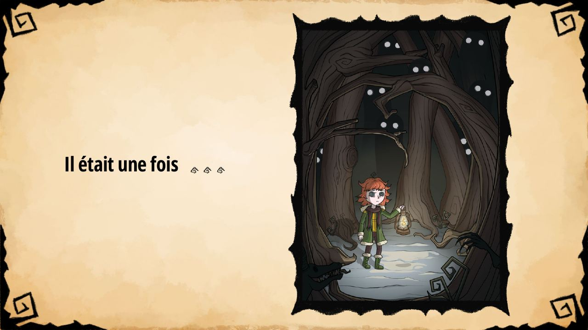

Fulllife — Esports World Cup
Assistant project manager : soutien aux opérations, échanges avec les équipes et accueil des visiteurs dans un contexte international.
Salut, moi c’est Bahidj !
J’aime découvrir des univers, comprendre les gens et donner vie aux idées. Ici, je partage les projets, les rencontres et les expériences qui construisent mon parcours.

01 / Mes projets
Du lancement d’un casque gaming à l’expérience d’un musée, en passant par la création de jeux : découvre le contexte, notre travail et ce que ces projets m’ont appris.
02 / Mon parcours
La curiosité m’amène d’un univers à l’autre. Sur le terrain comme à l’école, j’aime comprendre les besoins et travailler avec des personnes différentes.
Voir mon CV ↗Assistant project manager : soutien aux opérations, échanges avec les équipes et accueil des visiteurs dans un contexte international.
Accueil, information et orientation des visiteurs lors d’événements sportifs au Groupama Stadium et au Matmut Stadium.
Étude des attentes de plus de 120 joueurs, analyse concurrentielle et participation au positionnement et aux contenus du projet.
Bachelor Management & Business, puis MBA Marketing, Communication & Événementiel. Échange universitaire en Corée du Sud en 2026.
03 / En quelques mots
Je m’appelle Bahidj. Je suis étudiant en marketing et communication, passionné par le jeu vidéo, l’esport, le football et la création. J’aime aussi l’art classique, la gravure et les mythologies : des univers différents qui nourrissent ma curiosité.
Ce que je préfère dans un projet ? Comprendre à qui il s’adresse, échanger avec une équipe et chercher ensemble comment rendre une idée claire, utile et vivante.
04 / On échange ?
Je suis toujours partant pour découvrir de nouveaux univers et discuter d’une opportunité.